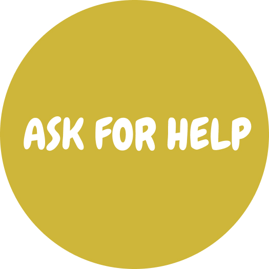
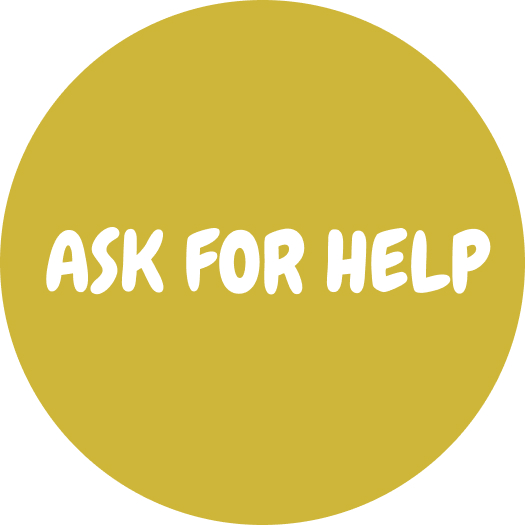

DEPRESSION
SLEEP DISORDER
STRESS DISORDER
EATING DISORDER
ANXIETY DISORDER
FUN TIME
ANXIETY DISORDER
Click on the circles to learn more about anxiety disorder
Anxiety Disorders:
Anxiety is a feeling of fear, dread, and uneasiness. It might cause you to sweat, feel restless and tense, and have a rapid heartbeat. It can be a normal reaction to stress. For example, you might feel anxious when faced with a difficult problem at work, before taking a test, or before making an important decision. It can help you to cope. The anxiety may give you a boost of energy or help you focus. But for people with anxiety disorders, the fear is not temporary and can be overwhelming.
Anxiety disorders are conditions in which you have anxiety that does not go away and can get worse over time. The symptoms can interfere with daily activities such as job performance, schoolwork, and relationships.
Common myths about anxiety:
Myth 1: Anxiety isn’t a real illness.
Feeling stressed, worried or anxious are very common experiences. Feeling worried, whether it’s about work, finances or personal life, can help people anticipate potential problems and solve them ahead of time. Because feeling worried or anxious is common and, in small doses, may be helpful in anticipating problems, many people may question whether anxiety is a real mental illness.
Anxiety disorders go beyond the general worry of day to day life. They are characterized by feeling worried or fearful every day for six months. People with an anxiety disorder diagnosable by the Diagnostic and Statistical Manual for Mental Health, fifth edition (DSM-5) must have a certain number of symptoms that persist for at least six months. Anxiety disorders can be extremely debilitating and distressing to an individual.
Myth 2: Anxiety will go away on its own.
People may experience certain situations or stages of life that might increase levels of anxiety. In contrast, there may be periods of time where someone with an anxiety disorder might have a slight reduction in symptoms or be able to return to some of their regular activities. This may feel like a person with anxiety no longer has the disorder, or that their symptoms have been “cured.” However, anxiety disorders can be chronic and persistent, and if not dealt with properly, anxiety symptoms are likely to return.
In addition, feelings of anxiety are usually linked to underlying personality traits or ways of thinking. Because of this, getting anxiety to go away often requires addressing certain aspects of how a person thinks or behaves. While this shift in perspective often doesn’t happen on its own, it can be achieved through therapy or coping strategies for anxiety. Although a person can certainly make progress and feel like their anxiety symptoms are under control, it is best to address symptoms and causes of the disorder head-on.
Myth 3: People with anxiety should avoid stressful situations.
Stressful situations or encountering an anxiety trigger can be extremely unpleasant for someone with an anxiety disorder. Although it may seem helpful to avoid stressful situations, this is extremely difficult to maintain. Stressful situations are a fact of life, and an important part of managing anxiety is learning effective coping strategies that help people manage their anxiety during times of stress.
Avoiding stressful situations altogether can impact a person’s ability to participate or function normally in their daily lives. On the other hand, finding effective ways to cope with stress can improve health and quality of life.
Myth 4: Anxiety disorders are not common.
Anxiety disorders are the most common mental disorders, and 33.7% of adults in the United States will experience an anxiety disorder in their lifetime. Different types of anxiety disorders can have different symptoms and presentations, but all anxiety disorders have a significant impact on daily living. Although symptoms may not always be obvious, most people know of someone close to them who suffers from an anxiety disorder.
Even though anxiety disorders are common, they may not be discussed publicly, or people may feel embarrassed or stigmatized by their symptoms. Due to the high prevalence of anxiety, it is important to understand the signs, symptoms and treatment options available.
Myth 5: Panic attacks can cause you to faint.
A panic attack can feel different for different people. There is a range of symptoms of a panic attack, including a racing heart and difficulty breathing. Although these events are not common in panic attacks, some people may faint or vomit, which can add to the stress of experiencing a panic attack.
In some cases, feelings of panic are worsened by the fear of a fainting spell. Fainting during a panic attack is quite an extreme response, and the actual outcome of fainting is rare. However, feeling faint, lightheaded or unwell are common symptoms of panic and anxiety.
People may change their behavior leading up to or during a panic attack to avoid these symptoms altogether, or to keep them from getting worse. A person who is having or is worried about having a panic attack may locate exits ahead of time, find somewhere to be alone, lay down or take medication. These steps can help reduce feeling faint or lightheaded, and may also relieve some of the anxiety surrounding fainting itself.
Myth 6: Social anxiety is the same as being shy.
There are multiple differences between being shy vs. having social anxiety. On a basic level, social anxiety is an anxiety disorder, while shyness is considered part of someone’s personality. Social anxiety disorder, or social phobia, involves a persistent fear of social situations, or extreme worry about performance in a social group. Someone with social anxiety is extremely preoccupied with the fear that they will embarrass themselves or be scrutinized by others in a social situation, and they will often avoid social situations or experience extreme anxiety or panic in the lead-up.
Although people who are shy may be more likely to experience social anxiety, the two are not the same. People who are shy may feel slightly uncomfortable in social situations, or prefer solitude, but being shy is not characterized by extreme anxiety or panic in social settings.
A key difference between shyness and social anxiety is the level of distress experienced. In most cases, being shy is a personal quality that is often not overly upsetting. Social anxiety, on the other hand, can be extremely debilitating and isolating.
Myth 7: It’s obvious someone has an anxiety disorder.
Although anxiety is extremely debilitating to those who suffer from it, it is often not noticeable to people around them. It can often be hard to tell if someone has an anxiety disorder.
Sometimes, symptoms of anxiety are psychological, and might not present as a physical reaction, visible panic or apparent distress. Some people may feel anxious about having their symptoms noticed or pointed out by others, so they may work hard to hide them. In some ways, this can make anxiety worse or more difficult to manage. Given the prevalence of anxiety disorders, it is likely that most people know someone who is experiencing anxiety, but they may not be aware of it.
Myth 8: Medication is the only way to manage anxiety.
Historically, parents, especially mothers, have been blamed for mental illnesses, including eating disorders. However parents do not cause eating disorders. Eating disorders are complex disorders and it is known that a person’s risk for developing an eating disorders is due in large part to genetic factors. Parents, or other caretakers and supports play an integral role in helping a loved one with an eating disorder to recover.
Myth 9: Recovery from eating disorders is rare.
There are many different types of anxiety disorders, and they can range in symptoms and severity. In the same way, there are many different treatment options available for people experiencing anxiety. Although medication is one option for managing anxiety and can be life-changing for some people, there are effective alternatives, including exercise and cognitive behavioral therapy.
Symptoms of anxiety disorders:
There are several types of anxiety disorders, including generalized anxiety disorder, panic disorder, and various phobia-related disorders.
Generalized Anxiety Disorder
People with generalized anxiety disorder (GAD) display excessive anxiety or worry, most days for at least 6 months, about a number of things such as personal health, work, social interactions, and everyday routine life circumstances. The fear and anxiety can cause significant problems in areas of their life, such as social interactions, school, and work.
Generalized anxiety disorder symptoms include:
- Feeling restless, wound-up, or on-edge
- Being easily fatigued
- Having difficulty concentrating; mind going blank
- Being irritable
- Having muscle tension
- Difficulty controlling feelings of worry
- Difficulty controlling feelings of worryHaving sleep problems, such as difficulty falling or staying asleep, restlessness, or unsatisfying sleep
Panic Disorder
People with panic disorder have recurrent unexpected panic attacks. Panic attacks are sudden periods of intense fear that come on quickly and reach their peak within minutes. Attacks can occur unexpectedly or can be brought on by a trigger, such as a feared object or situation.
During a panic attack, people may experience:
- Heart palpitations, a pounding heartbeat, or an accelerated heartrate
- Sweating
- Trembling or shaking
- Sensations of shortness of breath, smothering, or choking
- Feelings of impending doom
- Feelings of being out of control
People with panic disorder often worry about when the next attack will happen and actively try to prevent future attacks by avoiding places, situations, or behaviors they associate with panic attacks. Worry about panic attacks, and the effort spent trying to avoid attacks, cause significant problems in various areas of the person’s life, including the development of agoraphobia (see below).
Phobia-related disorders
A phobia is an intense fear of—or aversion to—specific objects or situations. Although it can be realistic to be anxious in some circumstances, the fear people with phobias feel is out of proportion to the actual danger caused by the situation or object.
People with a phobia:
- May have an irrational or excessive worry about encountering the feared object or situation
- Take active steps to avoid the feared object or situation
- Experience immediate intense anxiety upon encountering the feared object or situation
- Endure unavoidable objects and situations with intense anxiety
Anxiety disorder among college students:
Anxiety in college is very common. According to the American College Health Association Fall 2018 National College Health Assessment, 63% of college students in the US felt overwhelming anxiety in the past year. In the same survey, 23% reported being diagnosed or treated by a mental health professional for anxiety in the past year.
The sharpest increase in anxiety occurs during the initial transition to college. A recent study demonstrated that psychological distress among college students — that is, their levels of anxiety, depression, and stress — rises steadily during the first semester of college and remains elevated throughout the second semester. This suggests that the first year of college is an especially high-risk time for the onset or worsening of anxiety.
It’s caused by many factors. Many factors contribute to the heightened risk for anxiety among college students. For example, sleep disruption caused by drinking excess caffeine and pulling all-nighters is associated with increased anxiety among college students. Loneliness also predicts mental health problems, including anxiety. Academic factors like school stress and disengagement from studies are also associated with psychological distress among college students.
It may be on the rise. College students today appear to be more stressed and anxious than ever before. A recent study in Sweden showed that anxiety levels have increased in recent years, especially among young adults. In the US, some research shows a decrease in psychological well-being among adolescents over the past several years. It’s not entirely clear what is causing this trend, though research shows a strong association between time spent on electronic communication (social media, smartphones) and reduced well-being among adolescents. Electronic communication might interfere with adjustment to college if it replaces healthy coping behaviors like exercise, face-to-face social interactions, and studying.
So, you are not alone!
3 tips for self-help if you think you have a anxiety disorder:
Tip 1. Approach, don’t avoid.
College is challenging and many students cope by avoiding stressors (skipping class, staying in bed all day). However, we know that avoidance tends to make anxiety worse over time. Instead, practice taking small steps to approach anxiety-provoking situations. If you’re struggling in a class, try emailing the professor for help. If you’re feeling lonely, try introducing yourself to someone in the dining hall. Not at college yet? Practice this skill over the summer by participating in pre-college programs on campus.
Tip 2. Practice self-care.
Many students struggle to maintain healthy eating habits, consistent exercise, and regular sleep without the structure of home. But self-care behaviors like these are extremely important for regulating mood and helping people cope with stress. Try to establish your own self-care routine — preferably before you even start college. Good sleep hygiene is key. Set a consistent bedtime and wake-up time each day. Avoid using your bed for activities other than sleep, like studying. Limit caffeine in the evening and limit alcohol altogether, as it interferes with restful sleep.
Tip 3. Avoid caffeine, smoking, and drinking.
Drinking too much caffeine can make you more anxious than normal. This is because caffeine can disrupt your sleep and also speed up your heartbeat. If you're tired, you're less likely to be able to control your anxious feelings. Avoiding drinks containing caffeine, such as coffee, tea, fizzy drinks and energy drinks, may help reduce your anxiety levels.
Smoking and alcohol have been shown to make anxiety worse. Only drinking alcohol in moderation or stopping smoking may help reduce your anxiety. To reduce the risk of harming your health: Men and women are advised not to regularly drink more than 14 units a week; Spread your drinking over 3 days or more if you drink as much as 14 units a week.
PLEASE ask for help immediately, if:
You are:
- Having suicidal thoughts;
- Might harm yourself or others;
- Feeling physically uncomfortable.
Carnegie Mellon on campus resources:
- Call Counseling and Psychological Services (CaPS) at 412-268-2922;
- Reach out to your advisor;
- Schedule a meeting with University Health Services (UHS) for stress consultations, substance use & recovery services, and health advice at 421-268-2157.
Click here to find the nearest mental health facility to you!
We are here! Let us help.


 

 DEPRESSION
SLEEP DISORDER
STRESS DISORDER
EATING DISORDER
ANXIETY DISORDER
FUN TIME
DEPRESSION
SLEEP DISORDER
STRESS DISORDER
EATING DISORDER
ANXIETY DISORDER
FUN TIME